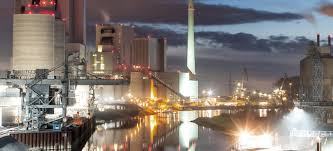
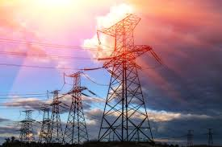

clea

Revolusi Industri 1.0
Terjadi pada akhir abad ke-18, ditandai dengan mekanisasi menggunakan tenaga uap dan air.

Revolusi Industri 2.0
Terjadi pada akhir abad ke-19, ditandai dengan produksi massal menggunakan listrik.
Revolusi Industri 3.0
Dimulai pada pertengahan abad ke-20 dengan otomatisasi dan komputer.

Revolusi Industri 4.0
Dimulai pada abad ke-21, dengan teknologi digital, AI, dan IoT.